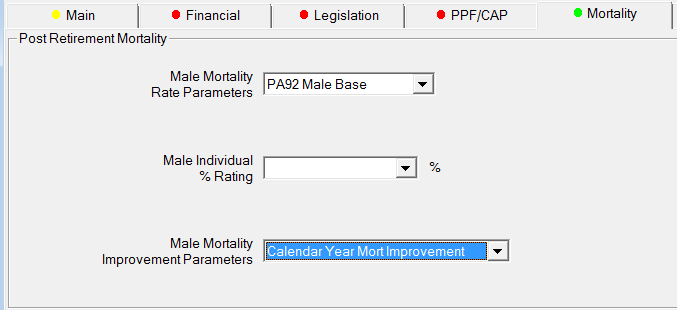

Mortality setup
How to define mortality rates in SuperVal for Actives, Deferreds and Pensioners.
Version This document is based on Version 9.25 of SuperVal. Any screenshots from earlier versions are not materially different from those in V9.25.
Inputs¶
Below is a screenshot of the fields to fill in when defining the mortality tables and improvement factors to use in SuperVal. The screenshot is taken from the Mortality tab from the Pensioners module. Set-up for the Actives and Deferreds modules is similar, except for that you will also need to define pre-retirement mortality (and, if applicable, ill-health retirement mortality). The fields can be found on the Mortality tabs in all modules.
If you click on Add/Edit Mortality Table at the bottom of the page, then the Mortality Rate Parameters can be added, defined and named as a set for a specific basis file:

Basic adjustments to mortality tables¶
There are several ways to adjust a (base) mortality table (circled in screenshot above).
Applying a % rating factor (or scaling)¶
This is simply done by adjusting the value of \(q_x\) for each age \(x\) by a constant, e.g.
where \(q_x\) is the base mortality rate, 1.1 is the scaling factor and \(q_x'\) is the adjusted mortality rate.
In SuperVal, % rating factors can be defined in the cells indicated, and can either be fixed or member-specific.
Fixed
In the Males/Females % Rating cells simply enter any additional percentage.
SuperVal will apply 1 plus the entry in the field. In other words, to
multiply the rates by 1.1 enter 10 for 10% loading or to multiply rates
by 0.9 enter -10.
Male Post Retirement Mortality Parameters
 Female Post Retirement Mortality Parameters
Female Post Retirement Mortality Parameters
The above mortality set-up is as follows:
Males: 110% PMA92 Base
Females: 90% PFA92 Base
In the Mortality tab, ensure you select the named parameter sets Male Post Retirement Mortality Parameters and Female Post Retirement Mortality Parameters.
Member-specific
If a percentage loading is required on a member-by-member basis, then a
data item can be selected and input on the Mortality tab in the
Male/Female individual % Rating cells. The data item (included in the
CSV file) has to be a number, so if a loading of 110% is
required then use 10, or if a loading of 90% use -10.
Applying an age rating¶
This is simply done by adjusting the value of \(q_x\) for each age \(x\) as:
where \(q_x\) is the base mortality rate, \(a\) is the age rating and \(q_x\) is the adjusted mortality rate.
In SuperVal, age ratings can be defined in the cells indicated, and must be fixed for each sex (i.e. you cannot presently define member-specific age ratings in SuperVal).
Male / Female Rating
The Age Rating cells make allowance for mortality lighter or heavier than that specified in the table. The adjustment specified here is made to the (base) mortality table specified.
NB: Non-integer ratings or ratings higher than +9 or -9 years are not allowed.
Male Post Retirement Mortality Parameters
Female Post Retirement Mortality Parameters
The above mortality set-up is as follows:
Males: PMA92 Base +1 yr
Females: PFA92 Base -1 yr
In the Mortality tab, select the named parameter sets Male Post Retirement Mortality Parameters and Female Post Retirement Mortality Parameters.
Allowing for mortality improvements¶
SuperVal gives you five different options for the type of mortality improvement you can define:
- None
-
This can be selected even when there is no mortality improvement set up on the Mortality tab
The other options can be seen when defining Mortality improvement tables:

These five options can be grouped into three separate categories, as explained below.
Basic mortality adjustments¶
This is where there is one \(q_x\) for each age the value of \(q_x\) does not vary with DOB (or based on a specified Calendar Year).
In this case, youd just select option N None and define the
mortality table(s) in the Male Table and Female Table cells.
This type of mortality adjustment has already been covered in the previous section. You can allow for improvements via age rating and scaling, as described earlier.
Adjusting the base mortality table using a 2D table by means of a Reduction Factor Formula
This is done by adjusting the value of \(q_x\) for each age \(x\) as follows:
where \(q_x\) is the base mortality rate, \(RF(x,t)\) is the reduction factor to apply to a member aged \(x\) at time \(t\), and \(q_x\) is the adjusted mortality rate.
One approach suggested by the Continuous Mortality Investigation (CMI) is to use a formula for the reduction factor, set out as follows:
\(RF(x,t)\) has a maximum value of 1 (since it reflects an improvement in mortality and hence a reduction in the value of \(q_x\)).
\(t\) in the formula above is the number of years after the base year (e.g. 1980 or 1992).
When setting up these tables, you can specify the values of alpha, beta
within SuperVal using a HX type table.
The CMI has published two sets of values for alphas and betas, which relate to adjusting the 80 series and 92 series base mortality tables. The values can be found in CMI Reports 10 and 17, respectively.
Depending on the improvement method used, you may also need to enter further parameters:
Improvement Method¶
SuperVal allows three different improvement methods to be applied that incorporate the Alpha and Beta tables.
These are as follows:
- Calendar Year
-

- Specified Year of Birth (applied to all members)
-

- Accurate Member Specific Year of Birth
Mortality Table Base Year¶
This parameter is only required for the Specified Year of Birth method
and (Accurate) Member Specific methods. So this would be 1980 or 1992,
say.
Specifying the Year of Birth or Term from Base Year¶
For the Enhanced Pensioners set-up, there are four different fields:
- Member (Males/Females)
- Contingent (Males/Females)
The value will depend on the mortality assumed for members and spouses (based on sex)
For the Calendar Year method, the value to input should be the difference between the Projection Year and the Base Year of the mortality table. So, if you were using PMA92 CY=2020, then the input would be 28 (=2020 1992).
For the Specified Year of Birth Method, the value to input is simply the fixed Birth Year that you are using for your mortality projections (e.g. 1945 for PMA92 BY=1945).
For the Actives and Enhanced Deferreds modules there are additional fields, depending on the type of decrement (e.g. death before retirement, withdrawal, retirement etc.).
Alpha and Beta (M&F)¶
Select the relevant rate table for Alpha and Beta values.
Period (M&F)¶
The period is 20 years (see CMI Reports)
Examples and comments¶
See Appendix for examples of setup for Calendar Year, Specified Year of Birth and Member-specific Year of Birth.
For member-specific Year of Birth, SuperVal uses age nearest at the valuation date to work out the relevant \(RF(x,t)\) factor to use. This may mean that the YOB is one year out in some cases.
If you set up mortality based on the \(RF(x,t)\) formula method using the 92-series improvement formulas to adjust 00 mortality base tables, the above methodology will not calculate mortality rates accurately. In this instance, you would need to input the \(RF(x,t)\) values as a 2D table, as described in the following section. The reason for this is that the formula for \(RF(x,t)\) shown above is based on improving mortality rates from 1992 onwards, while if you are using the 00 series base tables, you will only want to apply improvements after 2000. You cannot simply adjust the inputs above using 2000 instead of 1992.
The above methodology cannot allow for cohort effects or underpins. Again, 2D tables are required in this instance.
Adjusting the base mortality table by specifying a 2D table¶
Where the reduction factors do not follow the formula specified in the previous section, a 2-Dimensional Table can be specified in SuperVal (e.g. tables which include allowance for the cohort effect or an underpin to the rate of mortality improvement).

To use this method a CSV file is required for reduction factors that
vary by age and year. This file is stored in the System folder of where
the program files are kept (typically a network drive). A sample file is
provided with Version 8.30 called MortImpNew.csv.
Creating your own CSV file¶
This can be created in Excel but make sure you are pointing inside the data before saving as a CSV file type.
Ages are rows, years are columns.
Cell A1 must start at Age 0.
If the first column of improvements is the year 2000, then the Base Year of Mortality Improvement Table should be set to 2000. If the first column is 2007, then the Base Year of Mortality Improvement Table should be 2007, etc.
There must be 120 rows and 120 columns
Example setup¶
The following setup is for:
Males: PNMA00 BY=19xx LC min 1% i.e. member-specific birth year,
Long Cohort min imp 1% p.a.
Females: PNFA00 BY=19xx LC min 1%
Start off by adding the Mortality Rate Parameters with the base table, then add the Mortality Rate Improvements and add these to the basis file.

Likewise with the Female Mortality, and then save and move on to set up definitions for the Mortality improvement tables:
Then the Basis file should choose these two options on the Mortality tab:

Adjusting the age rating of improvement factors¶
If an age rating is being applied to the (base) mortality table, then the same age rating can be applied to the improvement factors.
This is done by checking the box for the following field within the Mortality Improvement set:
Example:
A members age is 60 nearest at valuation date
Valuation year is 2007
+2 year age rating is being applied to the base mortality table
If the box is left unchecked, then the age that SuperVal will use at valuation date for improvement factors will be 60.
If the box is checked, then the age that SuperVal will use at valuation date for improvement factors will be 62.
This is shown in the illustration below:
This illustration also shows that SuperVal does not adjust \(t\). If you do want to allow for the age rating to affect \(t\) (shown above as other option) , then youll need to import your own adjusted \(RF(x,t)\) tables.
Appendix¶
Sample setups for formula-derived 2D tables
Note All set-ups are taken from the Enhanced Deferreds Module.
Calendar Year¶
92-series base tables and CMI R17 αs & βs only
Males: PMA92 (CY=2007)
Females: PFA92 (CY=2007)



Specified year of birth¶
92-series base tables and CMI R17 αs & βs only
Males: PMA92 (BY=1945)
Females: PFA92 (BY=1945)

Accurate (member-specific) birth year¶
92-series base tables and CMI R17 αs & βs only
Males: PMA92 (BY=19xx) i.e. member-specific
Females: PFA92 (BY=19xx)